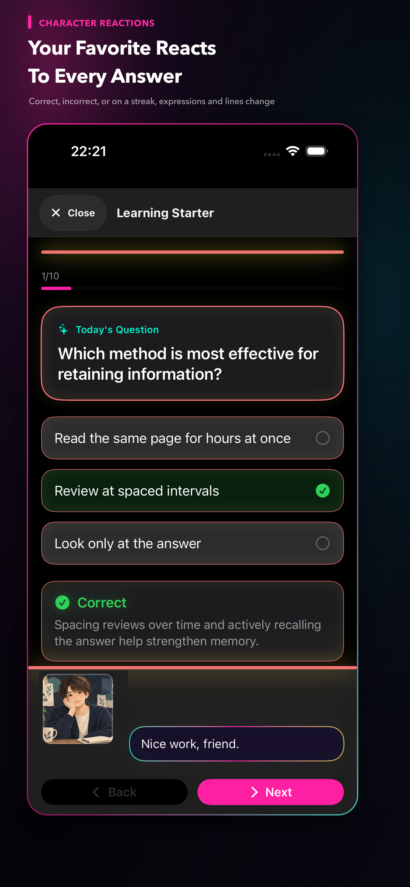
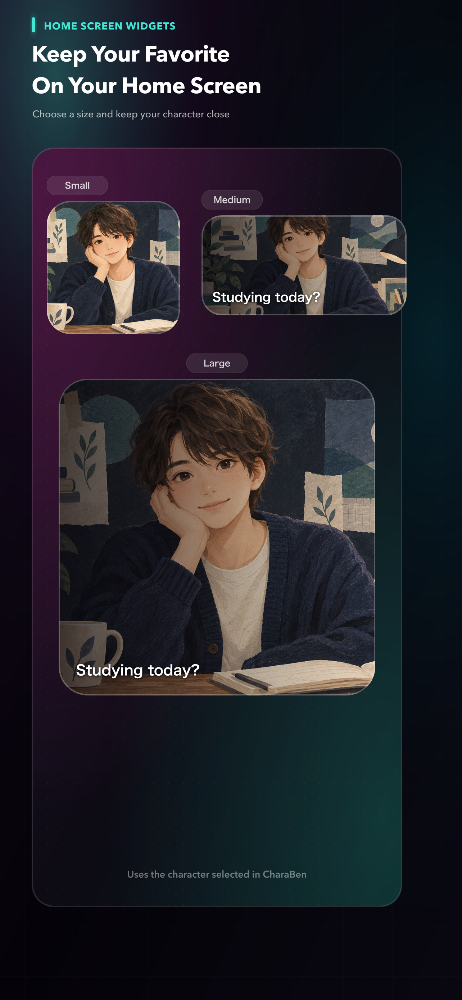
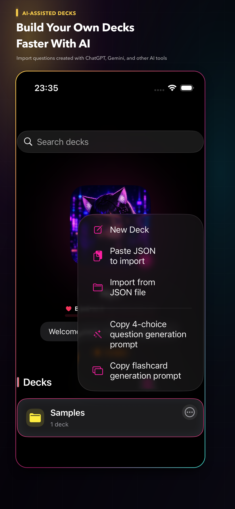

Create your character from an image
Choose an image and a name to get started. Reposition and zoom to crop your image, with transparent PNG support included.
iPhone STUDY APP
Turn a favorite image into your study partner. As you work through your own quizzes and flashcards, your character reacts with different expressions and lines.
Made for iPhone · Free to start · No account required

FEATURES
Choose an image and a name to get started. Reposition and zoom to crop your image, with transparent PNG support included.
Expressions and lines change after correct answers, mistakes, and streaks. Choose from speaking styles including Mysterious.
Create 4-choice questions and flashcards. You can also import a set of questions made with an external AI service.
INFOGRAPHICS
Turn question explanations and deck overviews into infographics featuring your favorite character, then save them for quick review. You can also copy prompts for an external generative AI service.
APP SCREENS


ON YOUR DEVICE
Question sets, study history, character settings, images, audio, and saved infographics are stored locally. No account is required, and CharaBen does not connect directly to external AI services.
PRIVACY POLICY
Last updated: September 8, 2026 · This translation is provided for reference; the Japanese version is the original policy.
CharaBen stores question sets, questions and answers, learning records, review status, folder, archive and pin settings, character settings, names, images, expression images, audio, display and notification settings, onboarding status, and information needed for backup and restore locally on your device.
This information is used for learning, display, review, backup, and restore features. It is not collected by or sent to servers operated by the Developer. CharaBen does not require account registration or use its own analytics SDK. If you choose external storage for a backup, that service’s policy applies.
CharaBen displays banner ads through Google LLC’s Google Mobile Ads SDK (AdMob) to support operating costs. Advertising providers may use IP address and approximate location, device or SDK identifiers, technical information, ad interaction information, and diagnostic and performance information for ad delivery, fraud prevention, measurement, and quality improvement.
At launch, CharaBen does not request App Tracking Transparency permission and does not track users for IDFA-based tracking advertising. See the Google Privacy Policy and Google Mobile Ads SDK data disclosure for details.
An optional non-consumable in-app purchase permanently removes ads. Apple processes purchases and restores; the Developer does not receive payment card information.
If you enable study reminders, CharaBen uses local notifications on your device. Notification content and settings are not sent to the Developer’s servers.
Files selected as character images, expression images, or audio are stored on your device and are not sent to the Developer. Imported question JSON and backup files are also processed on your device.
CharaBen can copy prompts for creating question JSON or infographic images with an external AI service, but it does not connect directly to an external AI service. Information entered there is subject to that service’s policy.
Except for the advertising provider handling described above, the Developer does not provide your learning content, character settings, images, audio, or backup contents to third parties.
Where parental consent is required, CharaBen is intended to be used with the involvement of a parent or guardian in accordance with applicable law. Because the app includes advertising, please review the App Store age rating and device content restrictions.
Contact charaben.support@gmail.com with policy questions. The Developer may update this policy in response to changes in law, advertising SDK specifications, or app features. Material changes will be announced on this page or in the app.